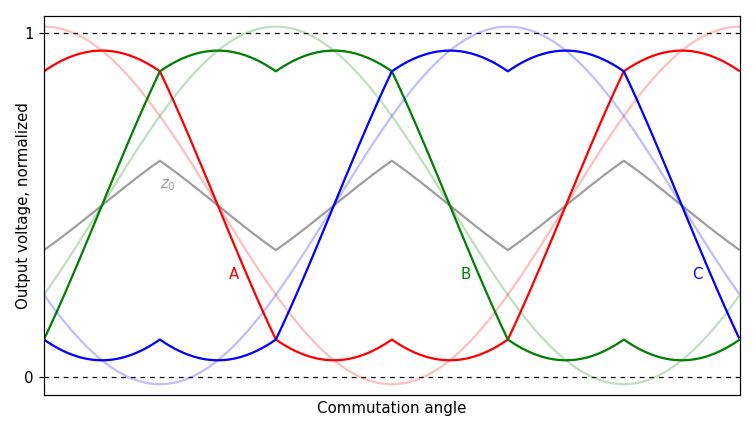

6.6.8. Verification and Board Bring-Up¶
6.6.8.1. Overview¶
This section provides guidance on bringing up a custom board for the first time with MCAF, after creating and importing a new board definition.
Warning
Use a current-limited power supply to power the custom board until sufficient confidence in the board definition in motorBench and the board design has been established.
Caution
Do not try to connect or start the motor after programming the code generated from MCC for the first time. Follow the procedure described below to reduce the risk of hardware damage.
6.6.8.1.1. Recommended equipment¶
In addition to the desired motor and custom board, recommended equipment includes:
Non-contact current probe (such as Chauvin Arnoux E3N or AEMC SL261) for measuring phase currents.
Three-phase alternator stator for low-voltage systems, as an alternative to a motor load; for example, Delco Remy 10470688 21SI (24V 50A).
6.6.8.1.2. General procedure¶
At a high level, the following steps are important when working with a new board:
Firmware execution: is the board executing properly? (heartbeat LEDs, PWM channels, real-time diagnostic connection)
Verify PWM operation: ensure PWM outputs are switching.
Verify DC link voltage measurement within expected range.
Test overcurrent fault functionality.
Verify closed-loop current control.
6.6.8.2. General Firmware Execution¶
Look for signs of correct CPU execution and timing:
“Heartbeat LEDs” — if present on the board, these will either be flashing at a 1Hz rate under normal operation, or flashing an error code if there is a fault condition (see External Interface)
PWM Channels — if the board is not in a fault condition, the PWM low-side channels (PWMxL) will be switching in a “minimal impact” state at the specified PWM frequency.
Test point
MCAF_TESTPOINT1, if available — should have a pulse at PWM switching frequency, representing the time interval when the MCAF ADC ISR is executing.Real-time diagnostic connection (X2Cscope) — the board should be able to communicate with the real-time diagnostic software.
If these are not working properly, there may be an issue with the CPU running at the correct frequency.
6.6.8.3. Open-Loop Voltage Operation¶
The test harness can be used to run the controller in an open-loop voltage mode where PWM outputs are driven at a forced commutation frequency and the outputs drive the PWM with a sinusoidally-varying line-to-line duty cycle. Each phase has an individual duty cycle that follows the characteristic double-humped waveforms of space-vector PWM / zero-sequence modulation as shown in Figure 6.11.

Figure 6.11 Zero sequence modulation waveforms as a function of commutation angle. The dark-colored curves are line-to-negative-link voltages, and the light-colored curves are line-to-neutral voltages. The gray curve \(z_0\) is the zero sequence voltage (average of the three line voltages, effectively neutral-to-negative-link voltage) which moves up and down during the commutation cycle to keep the range of line voltages centered within the available DC link voltage.¶
Make sure that the motor terminals of the board are open-circuited (not connected to any motor or load)
Follow the steps in Table 6.2 to prepare the controller for verification using open-loop voltage control.
Step |
Program variable |
Value |
Comments |
|---|---|---|---|
1 |
Define the macro |
||
2 |
Build and program the project to the test hardware. |
||
3 |
|
0xD1A6 (53670) |
Needed to enable automatic shutdown of test modes — see Implementation of Test Guarding |
4 |
|
0 |
Set the test harness mode to normal operation prior to configuring the desired test cases. — see Test harness modes |
5 |
|
0 |
Set both d- and q-axis components of |
6 |
|
2 |
Override commutation angle — see Commutation Override |
7 |
|
as needed |
Small values allow for slow changes in electrical angle;
for example, |
8 |
|
1 |
Set the test harness mode to force dq-axis voltage — see Test harness modes |
6.6.8.3.1. Verify PWM operation¶
With the motor disconnected from any load, slowly increase the inverter’s dq-axis reference voltage
motor.vdqCmd.d from zero during testing. At each step, observe the following:
Check that the duty cycles of the PWM outputs are changing at the expected electrical frequency
motor.testing.overrideOmegaElectrical.Verify dead time of the digital gate drive signals is occurring as expected.
Make sure transistor turn-on transients look ok.
Check each half-bridge output to ensure it swings between 0V and the DC link voltage as expected.
6.6.8.3.2. Verify DC link voltage measurement¶
The board can be operated from an adjustable power supply. Adjust it up or down through the intended range to check that the voltage read by the ADC falls within the expected tolerance range for a given DC link voltage.
6.6.8.3.3. Verify hardware overcurrent fault¶
Trigger the overcurrent input manually by connecting the microcontroller’s overcurrent sense input to the appropriate power rail, depending on the value of
peripherals.pwm.fault.polarity(see custom board schema):to Vss (
polarity=active-low)to Vdd (
polarity=active-high)
Verify that the PWM outputs stop switching.
Reset the overcurrent input (if using the Sample application, press the primary pushbutton).
Verify that the PWM outputs start switching again.
6.6.8.3.4. Verify scaling and polarity of current measurement¶
Ensure the test harness is configured in open-loop voltage mode as described in Table 6.2
Connect a three-phase inductive load (alternator stator or test motor).
Note
If using a motor, to prevent back-emf from affecting measurements, take either of the following approaches:
Lock the rotor so it does not move
Set the electrical frequency
motor.testing.overrideOmegaElectricalto zero
Increase d-axis voltage
motor.vdqCmd.din small steps until a modest amount of current (10-20% of maximum continuous current) flows through the motor phases. The required voltage should be approximately \(\delta_1V_{dc}+IR\) where \(\delta_1\) is the dead time, expressed as a duty cycle, and IR is the line-to-neutral voltage drop across the motor winding. Small increases of 5 – 20 counts at a time should be sufficient.Warning
Depending on the electrical angle
motor.thetaElectrical, the current in one motor phase may be near zero even though current flows in the other two phases. Make sure to measure current on at least two of the motor phases, to ensure that the motor phase current is not excessive. Alternatively, use a value ofmotor.testing.overrideOmegaElectricalthat is large enough to ensure at least 5 Hz electrical, while adjusting d-axis voltage, so that the electrical angle is changing smoothly and current is visible on all phases.Set
motor.testing.overrideOmegaElectricalto zero, so that the voltages and currents are at DC.Measure actual phase currents with a current probe, and compare with digitized current in firmware located in the
motor.iabcstructure; the measured and digitized currents should be within a reasonable range of each other.Verify that positive digitized current corresponds with the expected direction of current.
6.6.8.4. Closed-Loop Current Control¶
In this step, the inductive load (motor or stator) will be used to operate MCAF in closed-loop current control, with commanded current set to a small desired value and a superimposed square wave perturbation. (For an example of what this looks like, see Figure 5.27 in Examples of Poorly-Tuned and Well-Tuned Current Loops)
As shown in the data flow diagram, there are three important sets of dq-axis currents:
Program variable
Description
motor.idqCmdRaw.d
motor.idqCmdRaw.qDesired dq-axis currents, prior to perturbation
motor.idqCmd.d
motor.idqCmd.qDesired dq-axis currents, including perturbation
(commanded input to current controller)
motor.idq.d
motor.idq.qMeasured dq-axis currents
The goal of this step is to ensure that the measured currents motor.idq follow the commanded currents motor.idqCmd;
both d- and q-axis components of these currents should be examined using real-time diagnostics software.
Using the test harness:
Make sure MCAF is initialized for forced commutation:
Set
systemData.testing.guardKey = 0xD1A6(53670)Set
motor.testing.operatingMode = 0
(OM_DISABLED to keep output transistors in a minimal impact state)Set
motor.testing.overrides = 2
(Commutation override to force commutation)
Set
motor.testing.overrideOmegaElectrical = 0to force a fixed commutation angleSet
motor.idqCmdRaw.dandmotor.idqCmdRaw.qto zeroSet
motor.testing.operatingMode = 2
(OM_FORCE_CURRENT to run the controller in closed-loop current control, but disable the outer loop)Set
motor.idqCmdRaw.dto a modest value (for example 10-25% of rated continuous current; seeCURRENT_MAXIMUM_COMMANDin sat_PI_params.h)
Verify that the measured d- and q- axis currents (motor.idq.d and motor.idq.q) follow their respective commanded
currents (motor.idqCmd.d and motor.idqCmd.q).
Add a perturbation square wave signal, as described in the test harness, to the d-axis current command:
Set
motor.testing.sqwave.idq.qto zeroSet
motor.testing.sqwave.idq.dto a small value (half of the value used inmotor.idqCmdRaw.dis suggested)Set
motor.testing.sqwave.halfPeriodto a mid-range frequency (10Hz – 100Hz suggested)Set
motor.testing.sqwave.valueto 1, to enable perturbation
Verify that the measured d- and q- axis currents (motor.idq.d and motor.idq.q) follow their respective commanded
currents (motor.idqCmd.d and motor.idqCmd.q).